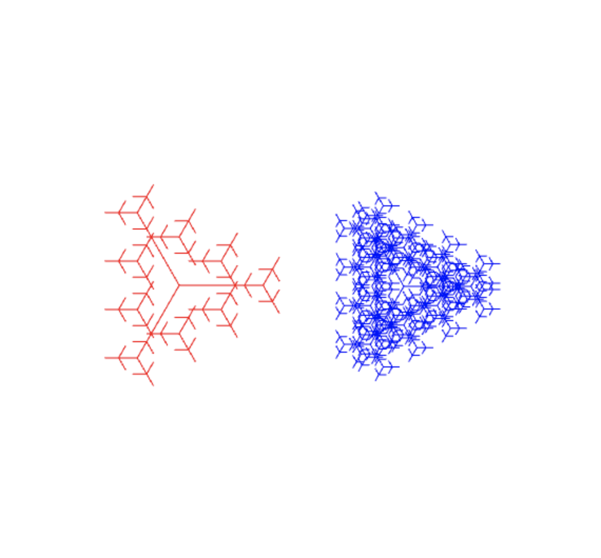
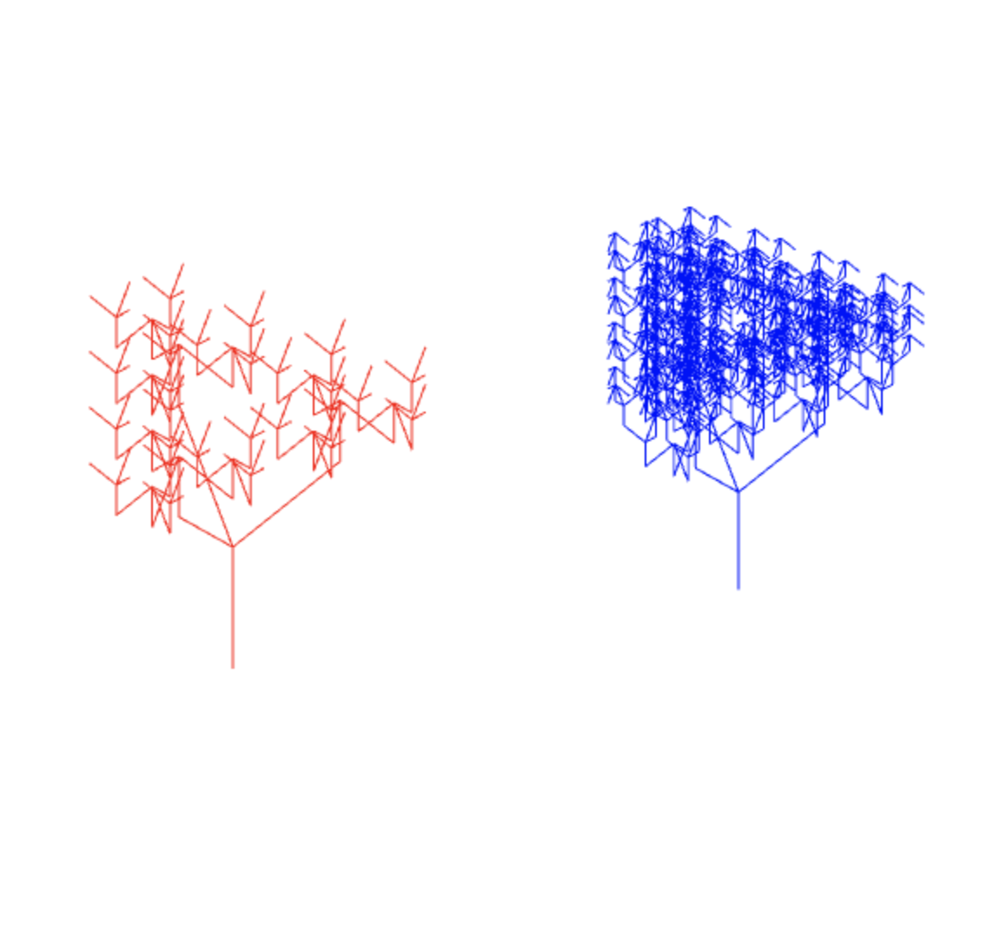

This lab allows the user to draw red or blue trees onto the canvas depending on whether it was a left or right click.
Left click anywhere on the canvas to draw a red fractal tree with length 40 and recursion level 4
or right click to draw a blue tree with length 50 and recursion level 6.
Angles are calculated and scaled based on the previous branch position and level.
There is a button to toggle between two different viewing angles. Screenshots below show the 2 angles.
Screenshots:
 